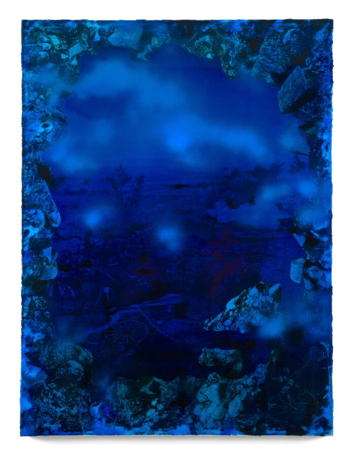

ATP Visiting Artist Talk: Rush Baker IV
The Department of Art Theory and Practice at Northwestern University welcomes Rush Baker IV as part of the ongoing visiting artist series.
Rush Baker IV (American, b. 1987, Washington, DC; he/him) is a painter whose work explores landscapes as vessels of cultural memory, transformation, and identity. Embracing uncertainty as a central methodology, Baker works through the tension between destruction and reconstruction, using abstraction as a strategy to unsettle preconceived ideas and fixed narratives. Through experimental approaches to material, process, and scale, his paintings challenge the boundaries between abstraction and representation, inviting viewers to encounter landscape as an active, unstable participant in history.
Baker’s practice is informed by a sustained engagement with history, geography, and the ways place shapes human experience. His work often reflects overlooked or erased narratives, weaving together elements of topography, architecture, and personal memory. Employing techniques such as scraping, layering, erasure, and the use of unconventional tools, he constructs dense surfaces that evoke both natural and built environments. His process mirrors the complexities of history itself—revealing and obscuring information in equal measure, and allowing meaning to remain provisional rather than resolved.
Baker has exhibited nationally and internationally, with solo exhibitions at Future Gallery (Berlin), Scaramouche Gallery (New York City), The Cooper Union (New York City), HEMPHILL Artworks (Washington, DC), Honfleur Gallery (Washington, DC), and Keijsers Koning (Dallas), among others. His work has been included in group exhibitions at Zidoun-Bossuyt (Luxembourg), The Third Line (Dubai), the Harvey B. Gantt Center (Charlotte, NC), MOCADA (Brooklyn), Bowie State University, Koki Arts (Tokyo), and Yale University.
He received a BFA from The Cooper Union for the Advancement of Science and Art, where he was awarded the Jack Stewart Memorial Prize for Excellence in Painting, and an MFA from Yale University, where he received the Elizabeth Canfield Hicks Award for outstanding achievement in drawing or painting from nature. In 2023, Baker was a Trawick Prize finalist, and in 2024 he was named an Artsy Foundations Prize Finalist. His work is held in the permanent collections of The Phillips Collection (Washington, DC), The Studio Museum in Harlem (New York, NY), the International African American Museum (Charleston, SC), the University of Maryland (College Park, MD), and the Soho House Collection, among others.
Baker is currently an Assistant Professor of Painting at the School of the Art Institute of Chicago. He previously served as a Visiting Assistant Professor in Drawing and Painting at the University of Iowa, where he was also the 2024–25 Grant Wood Fellow in Painting and Drawing, and earlier taught in the MFA Program at American University’s Katzen School of Art in Washington, DC. He lives and works in Chicago, IL.